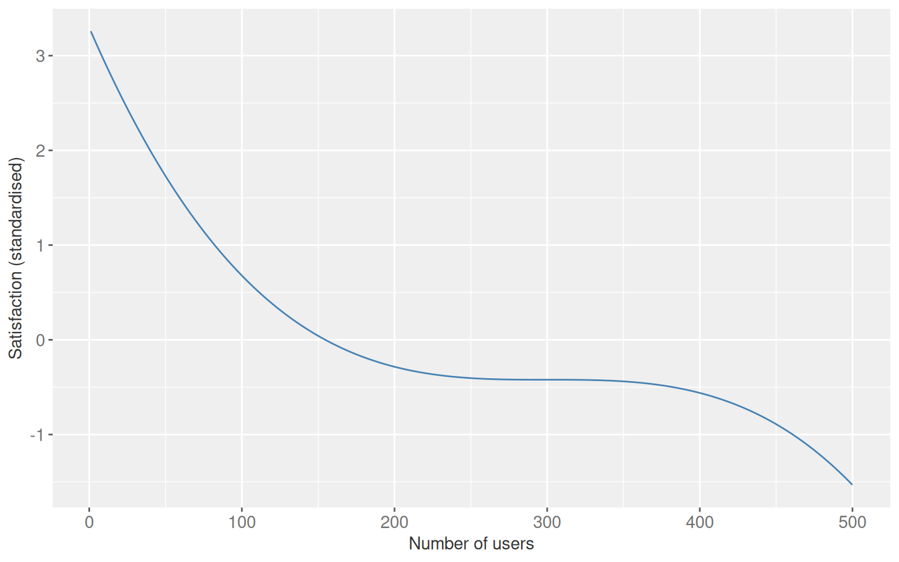

From question to answer: Stratification and outcome models
Overview
The first five chapters built the scaffolding: potential outcomes, counterfactuals, DAGs, and the argument that statistics alone cannot resolve causal questions. This chapter is where estimation starts. It works through three approaches in order of increasing generality: stratification, parametric outcome models, and a survey of other estimators, showing what each requires and what it gives back.
6.1 Causal inference with group_by() and summarise()
Single binary confounder
The running example is a software company trying to measure whether update frequency (weekly vs. daily) affects customer satisfaction, scored as a standardised value with population mean 0 and standard deviation 1. The exposure is not randomised. Customer type (free or premium) causes both update frequency and satisfaction, opening a backdoor path. The DAG has no arrow from updates to satisfaction because the true effect is zero.
Figure 7.1: Update frequency and satisfaction share a common cause. No direct causal arrow connects them.
The simulation sets the true average treatment effect to zero. Each unit’s potential outcome under daily updates equals its potential outcome under weekly updates.
Comparing the exposure groups without accounting for customer type produces a spurious gap. Premium customers both receive daily updates more often and are more satisfied, so the raw comparison picks up the confounder as if it were a treatment effect.
Table 7.1: Unadjusted mean satisfaction by update frequency. The 0.47-point gap is confounding, not causation.
Update frequency
Mean satisfaction
weekly
-0.237
daily
0.238
Stratifying by customer type restores conditional exchangeability. Within free customers and within premium customers, the daily and weekly groups are comparable and the difference collapses.
A second confounder enters: whether the update occurs within business hours. Weekly updates fall within business hours more often; customers whose working hours overlap with the company’s support window have higher satisfaction through better access to customer service. There are now two valid adjustment sets: {customer_type, business_hours} and {customer_type, customer_service}.
Table 7.4: Stratified estimates under two valid adjustment sets. Both are close to the true effect of zero.
Adjustment set
Estimate
{customer_type, business_hours}
-0.00415
{customer_type, customer_service}
-0.00196
Continuous confounder and the curse of dimensionality
With a continuous confounder (number of users per organisation), stratification requires binning. Coarser bins leave residual confounding. Finer bins eventually produce strata with nobody in one exposure arm, a stochastic positivity violation.
The plot below shows how absolute bias changes as bin count increases from 3 to 20. Bias falls consistently within this range. At 30 bins at least one cell becomes empty and the estimate is undefined.
Figure 7.4: Absolute bias as a function of bin count when stratifying on a continuous confounder. Bias falls as bins increase, but positivity violations appear around 30 bins with n = 10,000.
Table 7.5: Stratified estimates at 5 and 20 bins. More bins reduce residual confounding.
Bins
Estimate
5
-0.04549
20
-0.00609
6.2 Parametric outcome models
Multivariable regression generalises stratification. The exposure and confounders enter together as predictors of the outcome. This is also called direct adjustment or regression adjustment. It handles continuous confounders without binning, at the cost of requiring the correct functional form.
For the two-confounder scenario, a linear model recovers an estimate near zero.
Table 7.6: Direct adjustment with two binary confounders. The confidence interval spans zero.
Effect of daily vs. weekly updates
Estimate
95% CI lower
95% CI upper
-0.0091
-0.0411
0.023
For the continuous confounder, no binning is needed.
Show code
linear_reg() |>fit(satisfaction ~ update_frequency + num_users, data = satisfaction3) |>tidy(conf.int =TRUE) |>filter(term =="update_frequencydaily") |>select(estimate, conf.low, conf.high) |>mutate(across(everything(), \(x) round(x, 5))) |>kbl(col.names =c("Estimate", "95% CI lower", "95% CI upper"),align ="ccc" ) |>kable_styling(bootstrap_options =c("striped", "hover", "condensed"),full_width =FALSE ) |>add_header_above(c("Effect of daily vs. weekly updates"=3))
Table 7.7: Direct adjustment with a continuous confounder. The model extrapolates across the confounder space without requiring bins.
Effect of daily vs. weekly updates
Estimate
95% CI lower
95% CI upper
0.00153
-0.00059
0.00366
This works because the simulation is linear. When the true functional form is nonlinear, a standard lm() call produces biased estimates.
Functional form matters
When the confounder-outcome relationship is nonlinear, a linear model will give a biased causal estimate even with the correct confounder included. Two remedies: poly() if the true form is known, or natural cubic splines via splines::ns() when it is not.
The nonlinear confounder-outcome relationship looks like this:
Show code
ggplot(satisfaction4, aes(x = num_users, y = satisfaction)) +geom_line(colour = ACCENT) +labs(x ="Number of users", y ="Satisfaction (standardised)") +theme_gray(ink = INK, accent = ACCENT) +theme_sub_axis(text =element_text(size =11))

Figure 7.5: The nonlinear relationship between number of users and satisfaction used in the functional form comparison. A linear model cannot capture this shape.
Table 7.8: Estimates under three model specifications when the true relationship is cubic. Only the correct polynomial and spline models recover a value near zero. The misspecified linear model is badly biased and the truth does not fall within its confidence interval.
Model
Estimate
95% CI lower
95% CI upper
Linear (misspecified)
-0.18879
-0.21889
-0.15869
Polynomial degree 3 (correct form)
0.00000
0.00000
0.00000
Natural cubic spline
0.00216
-0.00258
0.00690
Conditional vs. marginal effects
Direct adjustment gives a conditional effect: the estimated change in the outcome for a one-unit change in exposure, holding all other model variables fixed. Most causal questions target a marginal effect instead, the average effect across the distribution of covariates in the target population.
For continuous outcomes with a linear model and no interactions these two quantities are identical. Interactions break that equivalence. If the treatment effect varies by customer type, the single coefficient for update frequency no longer describes what happens across the whole population. Marginalization over the customer-type distribution is needed to answer the policy question. Conditional and marginal effects also diverge for non-collapsible link functions such as logistic and Cox regression, even without interactions.
6.3 Overview of estimators for causal inference
The rest of the book works through four families of unconfoundedness methods.
Show code
tibble(Method =c("Inverse probability weighting","Matching","G-computation","Doubly robust methods" ),`Also called`=c("Propensity score weighting","PS matching, distance matching","Standardization, marginal effects","TMLE, augmented propensity score" ),`Core idea`=c("Reweight units by predicted treatment probability to create a pseudo-population where exchangeability holds. Extends to time-varying treatments.","Pair treated and untreated units with similar propensity scores or covariate distances.","Fit an outcome model, then marginalize predictions over the target population. Extends to time-varying treatments.","Model both the outcome and the treatment. Consistent if either model is correctly specified. Permits machine learning for both." )) |>kbl(align ="lll") |>kable_styling(bootstrap_options =c("striped", "hover", "condensed"),full_width =TRUE ) |>column_spec(1, bold =TRUE) |>column_spec(3, width ="50%")
Table 7.9: Unconfoundedness estimators covered in subsequent chapters.
Method
Also called
Core idea
Inverse probability weighting
Propensity score weighting
Reweight units by predicted treatment probability to create a pseudo-population where exchangeability holds. Extends to time-varying treatments.
Matching
PS matching, distance matching
Pair treated and untreated units with similar propensity scores or covariate distances.
G-computation
Standardization, marginal effects
Fit an outcome model, then marginalize predictions over the target population. Extends to time-varying treatments.
Doubly robust methods
TMLE, augmented propensity score
Model both the outcome and the treatment. Consistent if either model is correctly specified. Permits machine learning for both.
When exchangeability cannot be achieved, other identification strategies may apply.
Show code
tibble(Method =c("Instrumental variables","Regression discontinuity","Difference-in-differences","Synthetic controls" ),`Key assumption`=c("An instrument affects treatment but not the outcome except through treatment.","A threshold determines treatment; units just above and below it are comparable.","Treated and untreated groups share parallel trends in the absence of treatment.","A weighted combination of untreated units approximates the treated unit's counterfactual trajectory." )) |>kbl(align ="ll") |>kable_styling(bootstrap_options =c("striped", "hover", "condensed"),full_width =TRUE ) |>column_spec(1, bold =TRUE) |>column_spec(2, width ="70%")
Table 7.10: Identification strategies for settings where exchangeability is implausible.
Method
Key assumption
Instrumental variables
An instrument affects treatment but not the outcome except through treatment.
Regression discontinuity
A threshold determines treatment; units just above and below it are comparable.
Difference-in-differences
Treated and untreated groups share parallel trends in the absence of treatment.
Synthetic controls
A weighted combination of untreated units approximates the treated unit's counterfactual trajectory.
Causal methods in randomised trials
Randomisation removes confounding, so an unadjusted comparison is valid. Including pre-randomisation predictors of the outcome still helps: it reduces variance and narrows confidence intervals without introducing bias. It has been shown mathematically that propensity-score adjustment in a randomised trial always improves precision relative to the unadjusted estimate, at a level equivalent to what direct adjustment provides.
Figure 7.6: Three estimators in a randomised trial. All three are unbiased. The two adjustment approaches have smaller standard errors and narrower intervals.
Table 7.11: Estimates and standard errors for the three approaches in the randomised trial.
Effect of daily vs. weekly updates
Estimator
Estimate
Std. error
CI lower
CI upper
Unadjusted
-0.0115
0.0200
-0.0507
0.0278
Direct adjustment
-0.0018
0.0122
-0.0258
0.0221
Inverse probability weighting
-0.0018
0.0122
-0.0258
0.0221
6.4 Entering the design phase
Propensity score methods get priority in the chapters ahead because of one property: the exposure model can be specified and evaluated before looking at the outcome. That separation between design and analysis is harder to maintain with outcome models, where the outcome relationship is nearly always visible. The next several chapters work through that design phase in detail.
Key takeaways
Stratification works for simple discrete adjustment sets. It breaks down with continuous confounders and many variables, where the curse of dimensionality leaves too few observations per stratum.
Outcome models generalise stratification. They handle continuous confounders without binning, but the estimate depends on getting the functional form right. Splines are a practical hedge when the true form is unknown.
Conditional and marginal effects coincide for linear models without interactions. They differ when interactions are present or when the link function is non-collapsible. Causal questions about populations usually call for marginal effects.